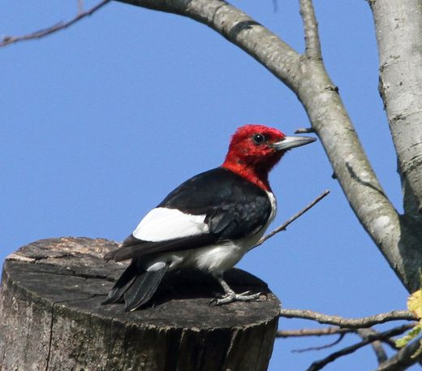
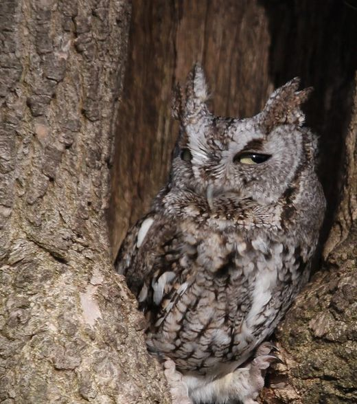
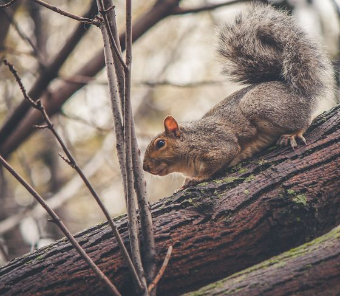

Demo preview.
The names on this tree are real. This is the Hammond family archive in progress, phase 1 lines, with every fact cited and its status shown. Living relatives are masked under the family's own privacy rule.
Every branch.
Scroll to explore your lineage
THE HAMMOND FAMILY
Deepest named generation · b. 1843
Lead · tree data only so far
1840S
FH Frank Hammond b. 1843 +2 relatives EB Eliza Browner b. 1843 +2 relatives 1900S
Hammond line
JH James J Hammond b. 1865 +4 relatives WA Willie Bethsaida Anderson b. 1897 +2 relatives Jackson line
DW Dora Weathers b. 1895 +2 relatives CJ Chester 'Chet' Jackson b. about 1895 +2 relatives TW Troy Wright b. 1908 · named in the family account +1 relatives Gooden line
AG Andrew Jackson Gooden b. 1903 +2 relatives AL Alberta Lang Dates not yet on file +2 relatives Criner line
OC Otis Criner Dates not yet on file +2 relatives EM Elouise Morris b. 1915 +2 relatives 
1930S
Hammond line
CH Curtis Franklin Hammond b. 1933 +4 relatives EJ Emma Jean Jackson b. 1936 View story Gooden line
MG Melvin Andrew Gooden b. 1932 +4 relatives OG Oddie Lee Criner Gooden b. 1933 +4 relatives 
PARENTS
Hammond line
AM Ava Hammond Mathews Living · held private +4 relatives JM Joseph Mathews Sr Living · held private +1 relatives Gooden line
RG Ronald Gooden Dates not yet on file +3 relatives 
TODAY
The root
JH Justynn LaRon McKenzie Hammond Root of this family tree +2 relatives
The keeper of the threshold
TODAY
Add your records
Drop photos and papers here. In this preview, nothing leaves your device.